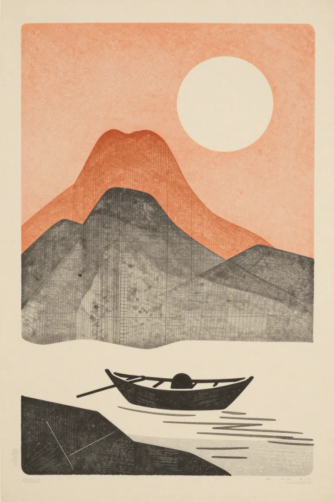

Kunstneren tegner, skjærer og trykker blokken alene, og avviser dermed de tre fagene i ukiyo-e-verkstedet. Resultatet er et dristig snitt, en individuell blokk, abstrakt form og synlige verktøymerker.

Kjerneidé
Et trykk er kunst når én person lager hele det, fra tegningen til det siste gnet med baren.
Designprinsipper
Skjær blokken selv. La huljerns- og knivmerkene stå i trykket.
Bruk 1 til 8 farger, og velg dem med snittet: en stor sort masse, et felt av rødt, en bunn av blågrått.
Bruk plankens eller kryssfinerens årer som tekstur og ikke som en feil.
Trykk fargen ujevnt, 0,5 til 1,5 mm ute av passer enkelte steder, og behold skiftet.
Tillat abstrakt form, eller en sterk, enkel figur, uten myk gradering.
Signer med blyant i margen, og skriv opplagsnummeret (for eksempel 12/30).
Trykk på washi eller tynt maskinpapir med en baren eller en liten presse.
Antimønstre
En polert, jevn gradering i manéren til et kommersielt trykk